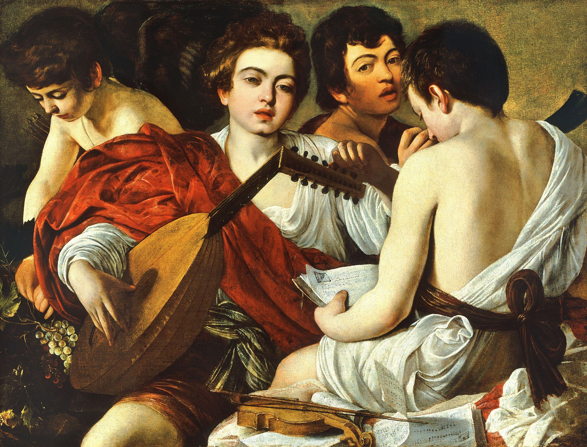
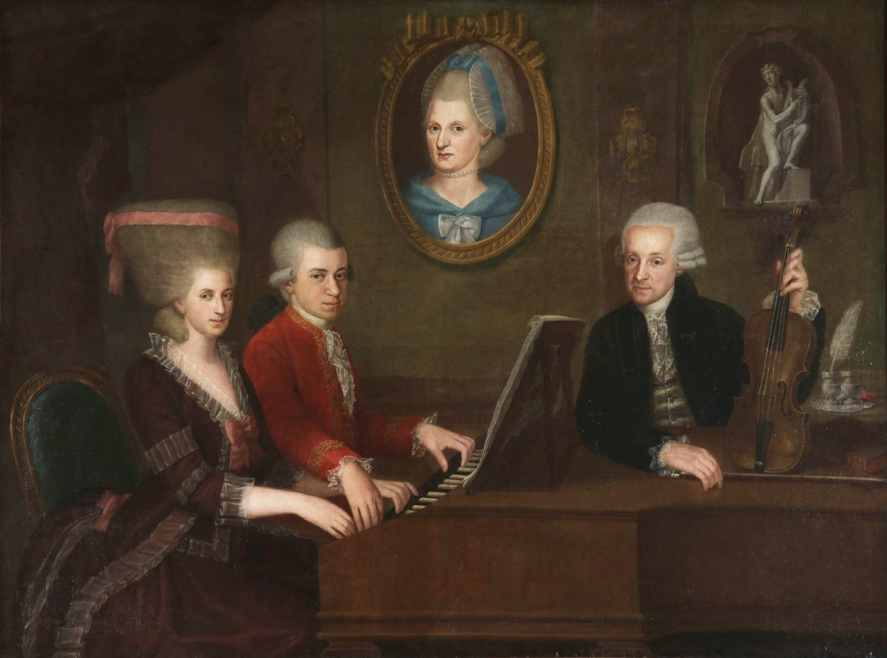
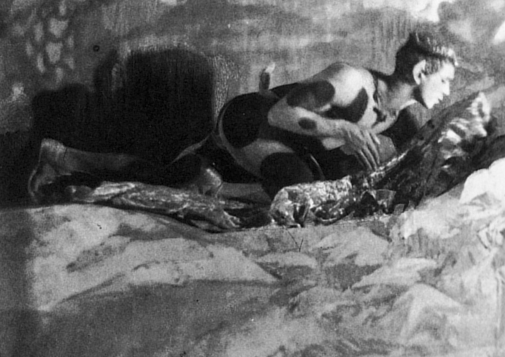
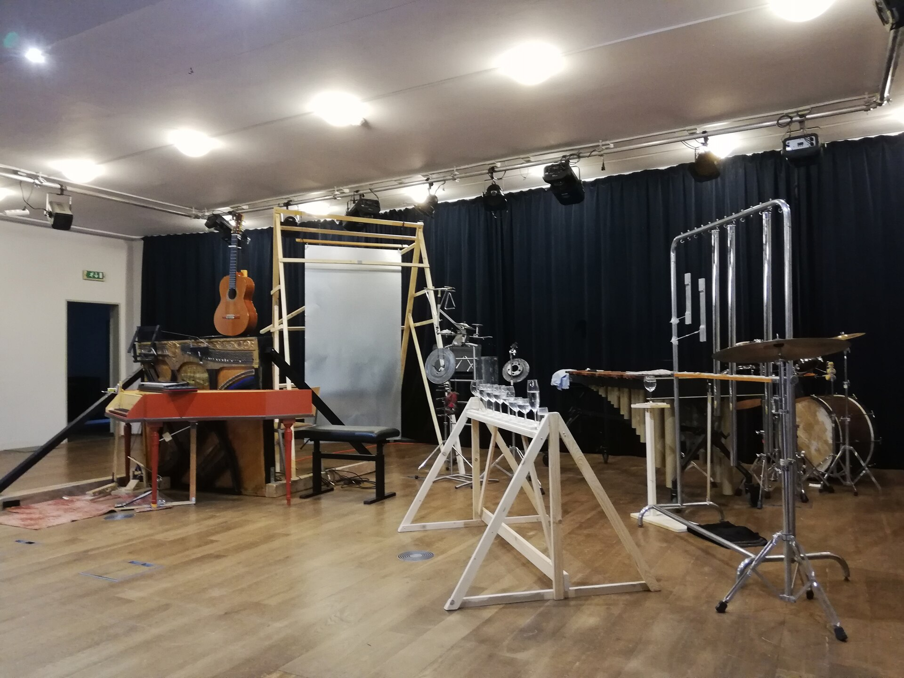
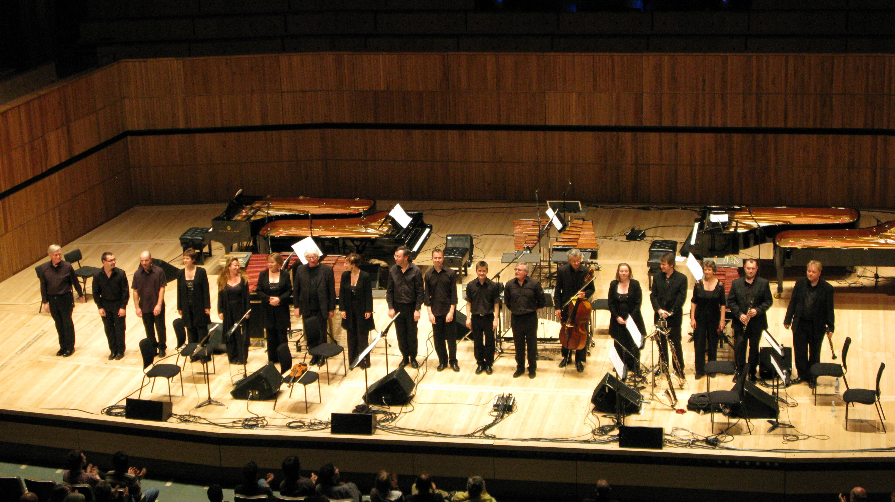
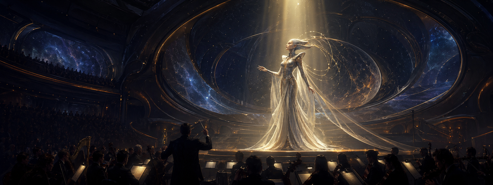
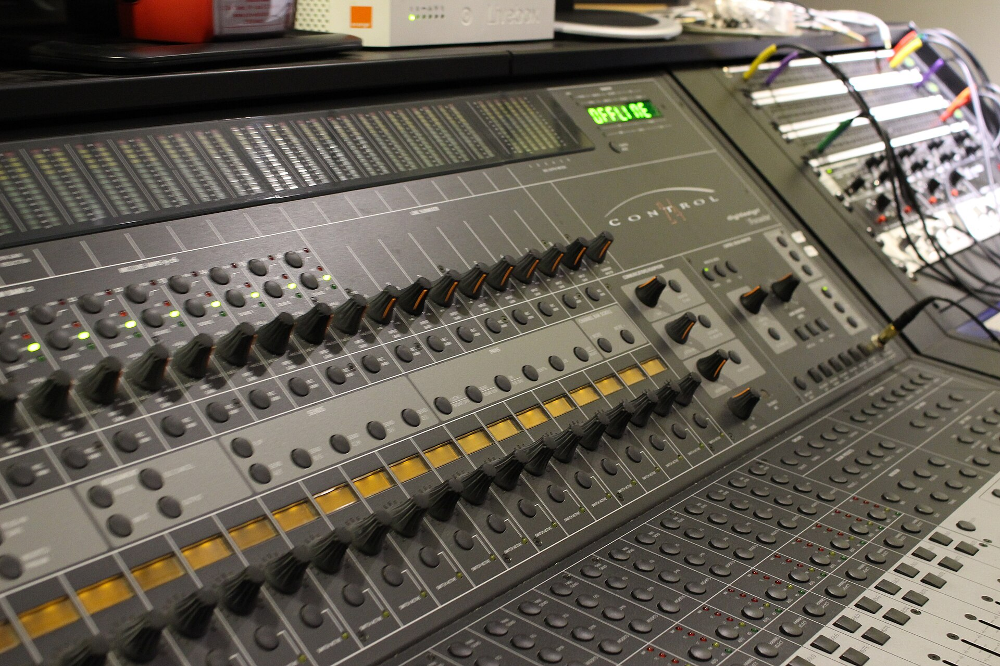

Classical Atlas
A chronological listening path through chant, polyphony, opera, symphony, recording, cinema, games, and contemporary cross-genre music.
This is a listening guide for people who want a structured first route into classical music. It follows time, setting, and medium: church and court, opera house and concert hall, recordings, cinema, games, and streaming.
The guide has ten chapters. Each chapter explains what to listen for, then gives starter tracks you can search directly. The companion playlist sits in the next section so you can read and listen together.
Companion Playlist
The guide comes with a 180-track playlist table. The file is classical_atlas_playlist.en.tsv. A TSV is a spreadsheet separated by tab characters, and Excel, Numbers, or Google Sheets can open it. Each row is one track in the playlist.
The playlist runs from roughly the ninth century to the 2020s. It covers 128 composers, creators, and screen-music figures, with 108 tracks from after 1900. The table also keeps more than 100 genre and form tags, so you can filter by symphony, concerto, opera, sacred vocal music, film score, game score, and other paths.
track_no gives the listening order, chapter matches the ten sections below, and difficulty marks starter or advanced tracks. Each chapter lists five starter tracks; for the full route, open the table and follow track_no from 001 to 180.
On Apple Music or Apple Music Classical, paste the search_keywords field. On Spotify, YouTube Music, TIDAL, NetEase Cloud Music, or another platform, use the same table to rebuild the playlist in order. If a platform lacks the exact recording, record the substitute instead of silently skipping it.
To recreate this 180-track playlist on a specific platform, give an AI assistant the playlist recreation prompt together with the TSV table.
Listening Map
This chart shows selected landmarks, not every composer covered by the guide or playlist. It places figures along three listening paths: sacred voice, stage and concert life, and recording or screen media. Portrait border colors mark regions or traditions, horizontal position marks approximate period, and the lines suggest continuity of listening habits rather than direct teacher-student influence.
1. Early Music And Polyphony (ca. 9th Century-1600)

The first chapters of Western classical music are not centered on the modern concert hall. They belong to churches, monasteries, courts, manuscripts, and ritual spaces. Chant carries sacred text in a single melodic line. Polyphony opens vertical space: several independent lines can move at once.
Listen first for texture and space. Do not wait for a modern tune or dramatic climax. Notice how voices enter, imitate, separate, and rejoin. The power of this music often lies in purity, proportion, and the way text becomes sound.
This tradition matters later because counterpoint becomes one of the deepest skills in European composition. Bach, Brahms, Stravinsky, Arvo Part, and many film composers inherit different parts of this early discipline.
Starter tracks from the playlist
| Playlist no. | Level | Composer | Work | Recommended recording / performers | Apple Music search | Why it is here |
|---|---|---|---|---|---|---|
| 001 | basic | Anonymous | Gregorian Chant: Dies irae | Chant: Music for the Soul / Benedictine Monks of Santo Domingo de Silos | Search | Representative listening example for 01 Early Music and Polyphony. |
| 002 | basic | Hildegard von Bingen | O viridissima virga, BN 19 | A Feather on the Breath of God / Emma Kirkby, Gothic Voices, Christopher Page | Search | Representative listening example for 01 Early Music and Polyphony. |
| 006 | basic | Josquin des Prez | Ave Maria ... virgo serena | Josquin: Motets / The Tallis Scholars, Peter Phillips | Search | Representative listening example for 01 Early Music and Polyphony. |
| 007 | basic | Giovanni Pierluigi da Palestrina | Missa Papae Marcelli: Kyrie | Palestrina: Missa Papae Marcelli / The Tallis Scholars, Peter Phillips | Search | Representative listening example for 01 Early Music and Polyphony. |
| 009 | basic | William Byrd | Haec dies | Byrd: Masses and Motets / The Cardinall's Musick, Andrew Carwood | Search | Representative listening example for 01 Early Music and Polyphony. |
2. Baroque (ca. 1600-1750)

Baroque music gives later European music several durable tools: basso continuo, concerto dialogue, fugue, dance suite, opera, and the idea of continuous harmonic drive. Bach is the summit of this language, but Vivaldi, Handel, Corelli, Rameau, Couperin, Lully, Telemann, Biber, and Purcell show how varied Baroque music can be.
Listen for the bass line first. It often gives the music its ground and forward motion. Then notice ornament, sequence, imitation, and contrast between soloist and ensemble.
Baroque music also has a modern afterlife. Mendelssohn helped revive Bach in the nineteenth century, and the twentieth-century early-music movement changed how listeners heard period instruments, tempo, and articulation.
Starter tracks from the playlist
| Playlist no. | Level | Composer | Work | Recommended recording / performers | Apple Music search | Why it is here |
|---|---|---|---|---|---|---|
| 015 | basic | Arcangelo Corelli | Concerto Grosso in G Minor, Op. 6 No. 8 "Christmas Concerto" | Corelli: Concerti Grossi Op. 6 / Trevor Pinnock, The English Concert | Search | Representative listening example for 02 Baroque. |
| 016 | basic | Antonio Vivaldi | The Four Seasons: Spring, I. Allegro | Vivaldi: The Four Seasons / Fabio Biondi, Europa Galante | Search | Representative listening example for 02 Baroque. |
| 017 | basic | Antonio Vivaldi | Gloria, RV 589: Gloria in excelsis Deo | Vivaldi: Gloria / Robert King, The King's Consort | Search | Representative listening example for 02 Baroque. |
| 018 | basic | George Frideric Handel | Zadok the Priest | Handel: Coronation Anthems / Trevor Pinnock, The English Concert | Search | Representative listening example for 02 Baroque. |
| 019 | basic | George Frideric Handel | Messiah: Hallelujah | Handel: Messiah / John Eliot Gardiner, Monteverdi Choir | Search | Representative listening example for 02 Baroque. |
3. Classical Period (ca. 1750-1820)

The Classical period turns music into a public language of form, balance, contrast, and argument. Haydn, Mozart, Beethoven, Gluck, Boccherini, and Hummel build durable models for symphony, string quartet, concerto, sonata, opera, and chamber music.
Listen for form. Sonata form often presents contrasting themes, develops them through tension, and brings them back changed. A concerto lets soloist and orchestra cooperate and compete. A string quartet can feel like four people thinking aloud together.
Beethoven is the hinge. He inherits Haydn and Mozart's forms but pushes them toward stronger drama. Later symphonists write under the pressure of what Beethoven made possible.
Starter tracks from the playlist
| Playlist no. | Level | Composer | Work | Recommended recording / performers | Apple Music search | Why it is here |
|---|---|---|---|---|---|---|
| 033 | basic | Carl Philipp Emanuel Bach | Solfeggietto in C Minor, Wq. 117/2 | C.P.E. Bach: Keyboard Works / Miklós Spányi | Search | Representative listening example for 03 Classical Period. |
| 034 | basic | Joseph Haydn | Trumpet Concerto in E-flat Major: III. Allegro | Haydn: Trumpet Concerto / Håkan Hardenberger, Academy of St Martin in the Fields | Search | Representative listening example for 03 Classical Period. |
| 035 | basic | Joseph Haydn | String Quartet Op. 76 No. 3 "Emperor": II. Poco adagio | Haydn: String Quartets Op. 76 / Quatuor Mosaïques | Search | Representative listening example for 03 Classical Period. |
| 036 | basic | Joseph Haydn | Symphony No. 94 "Surprise": II. Andante | Haydn: London Symphonies / Leonard Bernstein, New York Philharmonic | Search | Representative listening example for 03 Classical Period. |
| 037 | basic | Luigi Boccherini | String Quintet in E Major, G. 275: Minuet | Boccherini: String Quintets / Europa Galante | Search | Representative listening example for 03 Classical Period. |
4. Romanticism And National Styles (ca. 1810-1910)

The nineteenth century expands the emotional, literary, and national ambitions of classical music. Schubert compresses drama into song; Chopin makes the piano sing; Liszt turns virtuosity into stage identity; Wagner expands opera into continuous mythic drama; Verdi and Puccini transform opera into a mass theatrical language.
Listen for expansion: longer melodies, richer harmony, bigger orchestras, more extreme dynamics, and stronger links to poetry, legend, theater, and national identity.
Two influence lines are especially important. Wagner's leitmotif technique flows into film scoring. National schools bring folk dance, language rhythm, landscape, and local history into concert music, later shaping Bartok, Janacek, Copland, and many screen composers.
Starter tracks from the playlist
| Playlist no. | Level | Composer | Work | Recommended recording / performers | Apple Music search | Why it is here |
|---|---|---|---|---|---|---|
| 051 | basic | Franz Schubert | Symphony No. 8 "Unfinished": I. Allegro moderato | Schubert: Symphony No. 8 / Carlos Kleiber, Vienna Philharmonic | Search | Representative listening example for 04 Romanticism and National Styles. |
| 052 | basic | Franz Schubert | Erlkönig, D. 328 | Schubert: Lieder / Dietrich Fischer-Dieskau, Gerald Moore | Search | Representative listening example for 04 Romanticism and National Styles. |
| 053 | basic | Felix Mendelssohn | A Midsummer Night's Dream: Overture | Mendelssohn: A Midsummer Night's Dream / Claudio Abbado, London Symphony Orchestra | Search | Representative listening example for 04 Romanticism and National Styles. |
| 055 | basic | Robert Schumann | Kinderszenen, Op. 15: Träumerei | Schumann: Kinderszenen / Vladimir Horowitz | Search | Representative listening example for 04 Romanticism and National Styles. |
| 057 | basic | Frédéric Chopin | Nocturne in E-flat Major, Op. 9 No. 2 | Chopin: Nocturnes / Arthur Rubinstein | Search | Representative listening example for 04 Romanticism and National Styles. |
5. Early Modernism (ca. 1890-1918)

Around 1900, many composers stop extending Romantic grammar and begin loosening it. Debussy and Ravel change harmony and orchestral color. Satie rejects grand rhetoric. Stravinsky makes rhythm a structural force. Schoenberg, Berg, and Webern destabilize tonality itself.
Listen for unfamiliarity without treating it as failure. Debussy's harmonies may float instead of resolving. Ravel's orchestration can feel precise and luminous. Stravinsky's accents make the ground shift. Schoenberg's music asks you to hear line, color, and tension without a single tonal home.
Modernism is not one style. It is a group of reactions to the inheritance of Romanticism, industrial modernity, new cities, new politics, and new sound worlds.
Starter tracks from the playlist
| Playlist no. | Level | Composer | Work | Recommended recording / performers | Apple Music search | Why it is here |
|---|---|---|---|---|---|---|
| 073 | basic | Claude Debussy | Prélude à l'après-midi d'un faune | Debussy: Orchestral Works / Pierre Boulez, Cleveland Orchestra | Search | Representative listening example for 05 Early Modernism. |
| 076 | basic | Maurice Ravel | Pavane pour une infante défunte | Ravel: Piano Works / Alexandre Tharaud | Search | Representative listening example for 05 Early Modernism. |
| 078 | basic | Maurice Ravel | Boléro | Ravel: Boléro / Claudio Abbado, London Symphony Orchestra | Search | Representative listening example for 05 Early Modernism. |
| 081 | basic | Richard Strauss | Salome: Dance of the Seven Veils | Strauss: Salome / Georg Solti, Vienna Philharmonic | Search | Representative listening example for 05 Early Modernism. |
| 083 | basic | Charles Ives | The Unanswered Question | Ives: Orchestral Works / Leonard Bernstein, New York Philharmonic | Search | Representative listening example for 05 Early Modernism. |
6. Interwar Modernism, Jazz, Soviet Context, And Recording (ca. 1918-1945)

After the First World War, some composers return to clear forms with modern harmony and rhythm. Stravinsky, Prokofiev, Hindemith, Poulenc, Milhaud, Weill, and others rethink Classical and Baroque models. American composers absorb jazz, hymn, dance, film, and vernacular sound. Soviet composers write under political pressure, turning public optimism, fear, irony, and private grief into ambiguous musical surfaces.
Listen for rhythm and context. Gershwin brings jazz into concert form. Copland creates open American orchestral space. Prokofiev can sound elegant and sarcastic at once. Shostakovich often stands between public triumph and private terror.
Recording changes the story. Earlier 78 rpm discs favored shorter works and excerpts. LPs later made complete symphonies, quartets, and operas easier to live with at home. Film also becomes a major carrier of orchestral sound.
Starter tracks from the playlist
| Playlist no. | Level | Composer | Work | Recommended recording / performers | Apple Music search | Why it is here |
|---|---|---|---|---|---|---|
| 097 | basic | Sergei Prokofiev | Symphony No. 1 "Classical": I. Allegro | Prokofiev: Classical Symphony / Claudio Abbado, London Symphony Orchestra | Search | Representative listening example for 06 Interwar Modernism and New Media. |
| 098 | basic | Sergei Prokofiev | Romeo and Juliet: Dance of the Knights | Prokofiev: Romeo and Juliet / Valery Gergiev, London Symphony Orchestra | Search | Representative listening example for 06 Interwar Modernism and New Media. |
| 100 | basic | Dmitri Shostakovich | Symphony No. 5: IV. Allegro non troppo | Shostakovich: Symphony No. 5 / Yevgeny Mravinsky, Leningrad Philharmonic | Search | Representative listening example for 06 Interwar Modernism and New Media. |
| 101 | basic | Dmitri Shostakovich | Jazz Suite No. 2: Waltz II | Shostakovich: Jazz Suites / Riccardo Chailly, Royal Concertgebouw Orchestra | Search | Representative listening example for 06 Interwar Modernism and New Media. |
| 105 | basic | George Gershwin | Rhapsody in Blue | Gershwin: Rhapsody in Blue / Leonard Bernstein, Columbia Symphony Orchestra | Search | Representative listening example for 06 Interwar Modernism and New Media. |
7. Postwar Avant-Garde And Sound Experiments (ca. 1945-1970s)

After 1945, many composers reconsider what musical material can be. Boulez and Stockhausen develop serial and electronic techniques. Cage introduces chance, silence, and concept. Xenakis connects sound with mathematics and architecture. Ligeti and Penderecki focus on clusters, density, and texture.
For this chapter, temporarily stop asking where the melody is. Listen to how sounds appear, gather, transform, and disappear. Texture, density, register, attack, and space become primary musical events.
This music also reaches mass audiences through cinema. Kubrick's use of Ligeti in 2001: A Space Odyssey is one famous example. Horror, science fiction, and art film absorb clusters, microtones, noise, and electronic sound.
Starter tracks from the playlist
| Playlist no. | Level | Composer | Work | Recommended recording / performers | Apple Music search | Why it is here |
|---|---|---|---|---|---|---|
| 117 | basic | Olivier Messiaen | Turangalîla-Symphonie: V. Joie du sang des étoiles | Messiaen: Turangalîla-Symphonie / Esa-Pekka Salonen, Philharmonia Orchestra | Search | Representative listening example for 07 Postwar Avant-Garde and Sound Experiments. |
| 121 | basic | John Cage | Sonatas and Interludes: Sonata V | Cage: Sonatas and Interludes / John Tilbury | Search | Representative listening example for 07 Postwar Avant-Garde and Sound Experiments. |
| 124 | basic | György Ligeti | Atmosphères | Ligeti: Orchestral Works / Jonathan Nott, Berlin Philharmonic | Search | Representative listening example for 07 Postwar Avant-Garde and Sound Experiments. |
| 126 | basic | Krzysztof Penderecki | Threnody for the Victims of Hiroshima | Penderecki: Threnody / Antoni Wit, Polish National Radio Symphony | Search | Representative listening example for 07 Postwar Avant-Garde and Sound Experiments. |
| 128 | basic | Benjamin Britten | War Requiem: Libera me | Britten: War Requiem / Benjamin Britten, London Symphony Orchestra | Search | Representative listening example for 07 Postwar Avant-Garde and Sound Experiments. |
8. Minimalism And Post-Minimalism (ca. 1960s-1990s)

Minimalism answers the complexity of postwar modernism with pulse, repetition, phase, pattern, and slow change. Terry Riley, Steve Reich, Philip Glass, John Adams, Arvo Part, Henryk Gorecki, Michael Nyman, Meredith Monk, and later post-minimalist composers rebuild a kind of audibility without simply returning to nineteenth-century Romanticism.
Listen inside the repetition. A pattern may shift by one beat. Two lines may drift out of phase. One chord cycle may change through orchestration, accent, or register. The drama is often microscopic.
Minimalism is one of the most important bridges between concert music, film, electronic music, theater, and contemporary listening habits.
Starter tracks from the playlist
| Playlist no. | Level | Composer | Work | Recommended recording / performers | Apple Music search | Why it is here |
|---|---|---|---|---|---|---|
| 137 | basic | Terry Riley | In C | In C / Shanghai Film Orchestra, Wang Yongji | Search | Representative listening example for 08 Minimalism and Post-Minimalism. |
| 138 | basic | Steve Reich | Clapping Music | Reich: Works 1965-1995 / Steve Reich and Musicians | Search | Representative listening example for 08 Minimalism and Post-Minimalism. |
| 139 | basic | Steve Reich | Music for 18 Musicians: Pulses | Reich: Music for 18 Musicians / Steve Reich and Musicians | Search | Representative listening example for 08 Minimalism and Post-Minimalism. |
| 141 | basic | Philip Glass | Glassworks: Opening | Glassworks / Philip Glass Ensemble | Search | Representative listening example for 08 Minimalism and Post-Minimalism. |
| 143 | basic | John Adams | Short Ride in a Fast Machine | Adams: Short Ride in a Fast Machine / Michael Tilson Thomas, San Francisco Symphony | Search | Representative listening example for 08 Minimalism and Post-Minimalism. |
9. Film, Game, And Screen Media Music (1930s-Present)

Many listeners encounter orchestral sound through film, television, games, and short-form media before they enter the concert hall. This is not a lesser path. It is one of the main modern gateways into symphonic thinking.
Film music inherits Wagnerian leitmotif, late-Romantic orchestration, modernist color, jazz, electronic sound, minimalism, and popular song. Game music adds looping, interactivity, variation, and adaptive structure.
Listen for how a theme binds a person, place, object, memory, or world. Screen music often has to establish meaning quickly, so melody, rhythm, orchestration, and timbre are highly legible.
Starter tracks from the playlist
| Playlist no. | Level | Composer | Work | Recommended recording / performers | Apple Music search | Why it is here |
|---|---|---|---|---|---|---|
| 153 | basic | John Williams | Star Wars: Main Title | Star Wars: A New Hope / John Williams, London Symphony Orchestra | Search | Representative listening example for 09 Film, Game, and Screen Media. |
| 154 | basic | John Williams | E.T.: Flying Theme | E.T. The Extra-Terrestrial / John Williams, Hollywood Studio Symphony | Search | Representative listening example for 09 Film, Game, and Screen Media. |
| 155 | basic | John Williams | Schindler's List: Theme | Schindler's List / Itzhak Perlman, John Williams | Search | Representative listening example for 09 Film, Game, and Screen Media. |
| 156 | basic | Ennio Morricone | The Mission: Gabriel's Oboe | The Mission / Ennio Morricone | Search | Representative listening example for 09 Film, Game, and Screen Media. |
| 158 | basic | Nino Rota | The Godfather Waltz | The Godfather / Nino Rota | Search | Representative listening example for 09 Film, Game, and Screen Media. |
10. Contemporary Classical And Cross-Genre Composition (1990-Present)

Since 1990, there is no single mainstream. Kaija Saariaho writes with light, color, and texture; Thomas Ades combines rhythmic complexity and theatrical energy; Jennifer Higdon, Jessie Montgomery, Anna Clyne, Gabriela Ortiz, Caroline Shaw, Max Richter, Jonny Greenwood, Tan Dun, Unsuk Chin, and others cross boundaries among concert music, voice, film, electronics, popular forms, and global traditions.
Do not assume contemporary music is automatically difficult. Some works are direct, pulsed, and vivid. Others ask for patience with sound material, space, and process.
Streaming has changed access. New works no longer depend only on premieres, critics, and labels. They can circulate through playlists, films, podcasts, social media, and artist platforms.
Starter tracks from the playlist
| Playlist no. | Level | Composer | Work | Recommended recording / performers | Apple Music search | Why it is here |
|---|---|---|---|---|---|---|
| 169 | basic | Jennifer Higdon | blue cathedral | Higdon: blue cathedral / Robert Spano, Atlanta Symphony Orchestra | Search | Representative listening example for 10 Contemporary Classical and Cross-Genre Composition. |
| 170 | basic | Missy Mazzoli | Sinfonia for Orbiting Spheres | Mazzoli: Vespers for a New Dark Age / Victoire | Search | Representative listening example for 10 Contemporary Classical and Cross-Genre Composition. |
| 171 | basic | Jessie Montgomery | Starburst | Strum: Music for Strings / Jessie Montgomery, Catalyst Quartet | Search | Representative listening example for 10 Contemporary Classical and Cross-Genre Composition. |
| 172 | basic | Caroline Shaw | Partita for 8 Voices: Passacaglia | Roomful of Teeth / Roomful of Teeth | Search | Representative listening example for 10 Contemporary Classical and Cross-Genre Composition. |
| 173 | basic | Anna Clyne | Within Her Arms | Clyne: Mythologies / Esa-Pekka Salonen, Philharmonia Orchestra | Search | Representative listening example for 10 Contemporary Classical and Cross-Genre Composition. |
Appendix 1: Catalog Numbers
Catalog numbers make search safer. Op. usually means opus number. WoO means a work without opus number. Bach uses BWV; Mozart uses K. or KV; Haydn uses Hob.; Schubert uses D; Vivaldi uses RV; Debussy uses L; Ravel uses M; Bartok uses Sz. or BB.
Search with composer, genre, catalog number, and key performer when possible. Mozart Clarinet Concerto K 622 is safer than Mozart concerto. For composers with large catalogs, the catalog number often matters more than the nickname.
Appendix 2: How Recordings Change The Same Work
Different recordings can make the same score feel like a different piece. Conductors change tempo, phrasing, accent, and structure. Orchestras change color, weight, transparency, and tradition. Soloists change articulation, tone, timing, and narrative point of view. Period instruments change historical distance and texture. Recording date, venue, and remastering change space, noise, brightness, and perceived distance.
These Apple Music links are search links, so they should work across more account regions than fixed album URLs. The same keywords can also be pasted into Apple Music Classical.
| Work | Main variable | Versions to compare | Apple Music search | What changes |
|---|---|---|---|---|
| Beethoven, Symphony No. 5 | Conductor, orchestra, tradition | Herbert von Karajan / Berlin Philharmonic; Carlos Kleiber / Vienna Philharmonic; Nikolaus Harnoncourt / Chamber Orchestra of Europe | Karajan / Kleiber / Harnoncourt | Karajan is broader and polished; Kleiber is tense and propulsive; Harnoncourt is leaner and more speech-like. |
| Bach, Cello Suites | Soloist, instrument, bowing, recording date | Pablo Casals; Yo-Yo Ma; Anner Bylsma; Jean-Guihen Queyras | Casals / Yo-Yo Ma / Bylsma / Queyras | Casals sounds like discovery; Ma is smoother and more intimate; Bylsma and Queyras bring out dance, bowing, and historical style. |
| Stravinsky, The Rite of Spring | Precision, rhythm, orchestral impact | Pierre Boulez / Cleveland; Esa-Pekka Salonen / Los Angeles Philharmonic; Leonard Bernstein / New York Philharmonic | Boulez / Salonen / Bernstein | Boulez clarifies rhythm and orchestration; Salonen balances clarity and force; Bernstein is rougher and more theatrical. |
| Shostakovich, Symphony No. 5 | Political reading, tempo, orchestral tradition | Yevgeny Mravinsky; Leonard Bernstein; Bernard Haitink; Vasily Petrenko | Mravinsky / Bernstein / Haitink / Petrenko | The finale can sound like forced victory, public celebration, or bitter irony. |
| Debussy, La mer | Orchestral color and French style | Pierre Boulez / Cleveland; Claudio Abbado / Lucerne; Charles Munch / Boston | Boulez / Abbado / Munch | Boulez is clear and cool; Abbado flows more naturally; Munch has more elastic heat. |
Supplement: comparing recordings yourself. Start with one movement or one excerpt, not a whole symphony. Listen to the first minute and write down tempo, bass clarity, whether the main line is easy to follow, and how close the sound feels. Then compare a transition or climax. Notice how each version handles silence, buildup, balance, and release. Only after that should you check the recording year, venue, label, and whether it is live or studio.
Appendix 3: Basic Glossary
| Term | IPA | Meaning | Listening cue |
|---|---|---|---|
| Chant | /tʃænt/ | Single-line sacred singing. | Follow text and melodic contour instead of waiting for climax. |
| Motet | /moʊˈtɛt/ | A polyphonic sacred vocal work. | Listen for imitation between voices. |
| Mass | /mæs/ | A large sacred work based on liturgical text. | Notice how Kyrie, Gloria, Credo, and other sections differ. |
| Opera | /ˈɑːpərə/ | Staged drama through voice, orchestra, and theater. | Track how characters and musical ideas bind together. |
| Recitative | /ˌrɛsɪtəˈtiːv/ | Speech-like singing that moves plot. | Listen for language rhythm. |
| Aria | /ˈɑːriə/ | A more complete solo number in opera or oratorio. | The action often pauses while feeling expands. |
| Sonata form | /səˈnɑːtə fɔːrm/ | A structure based on contrast, development, and return. | Listen for conflict and return. |
| Concerto | /kənˈtʃɛərtoʊ/ | A work built around soloist and ensemble. | Hear whether the soloist leads, argues, or blends. |
| Symphony | /ˈsɪmfəni/ | A large multi-movement orchestral work. | Follow the whole arc, not only the famous theme. |
| Chamber music | /ˈtʃeɪmbər ˈmjuːzɪk/ | Music for a small ensemble. | Listen as if several people are talking at close range. |
| Leitmotif | /ˈlaɪtmoʊtiːf/ | A recurring idea tied to a person, place, object, or concept. | Watch how the idea changes with the story. |
| Atonality | /ˌeɪtoʊˈnæləti/ | Music not organized around one central key. | Follow color, tension, and contour. |
| Minimalism | /ˈmɪnɪməˌlɪzəm/ | Music built from repetition, pulse, and gradual change. | Listen for tiny changes inside repetition. |
| Timbre | /ˈtæmbər/ | The color or character of a sound. | Ask which instrument or texture defines the moment. |
| Orchestration | /ˌɔːrkɪˈstreɪʃən/ | How instruments are assigned and combined. | Notice how a melody changes when another instrument takes it. |
Appendix 4: Composer Index
This index is grouped by period and cultural sphere. It is meant as a search aid, not a modern-nationality chart: many composers cross periods and borders. IPA is given in common English-oriented forms to help with English sources and music-platform searches.
Medieval And Renaissance (ca. 9th Century-1600)
Chant And Early Sacred Repertory
- Gregorian chant / Anonymous
German-Speaking Europe
- Hildegard von Bingen (/ˈhɪldəɡɑːrd vɒn ˈbɪŋən/)
French And Franco-Flemish Traditions
- Pérotin (/ˈpɛrətɪn/)
- Guillaume de Machaut (/ɡiˈjoʊm də mæˈʃoʊ/)
- Guillaume Dufay (/ɡiˈjoʊm duːˈfaɪ/)
- Josquin des Prez (/ʒɒsˈkæn deɪ ˈpreɪ/)
Italy
- Giovanni Pierluigi da Palestrina (/dʒoʊˈvɑːni ˌpjɛərluˈiːdʒi dɑː ˌpælɛˈstriːnə/)
- Claudio Monteverdi (/ˈklaʊdioʊ ˌmɒntɪˈvɛərdi/)
- Giovanni Gabrieli (/dʒoʊˈvɑːni ˌɡæbriˈɛli/)
- Carlo Gesualdo (/ˈkɑːrloʊ ˌdʒɛzuˈɑːldoʊ/)
England
- Thomas Tallis (/ˈtɒməs ˈtælɪs/)
- William Byrd (/ˈwɪljəm bɜːrd/)
- John Dowland (/ˈdʒɒn ˈdaʊlənd/)
Baroque And Pre-Classical (ca. 1600-1750; pre-classical ca. 1730-1770)
Italy
- Arcangelo Corelli (/ɑːrˈkændʒəloʊ kɔːˈrɛli/)
- Antonio Vivaldi (/ænˈtoʊnioʊ vɪˈvɑːldi/)
- Domenico Scarlatti (/doʊˈmɛnɪkoʊ skɑːrˈlɑːti/)
German-Speaking Europe
- Johann Sebastian Bach (/ˈjoʊhɑːn səˈbæstiən bɑːx/)
- Georg Philipp Telemann (/ˈɡeɪɔːrɡ ˈfɪlɪp ˈtɛləmən/)
- Heinrich Ignaz Franz Biber (/ˈhaɪnrɪx ˈɪɡnɑːts frɑːnts ˈbiːbər/)
- Carl Philipp Emanuel Bach (/kɑːrl ˈfɪlɪp ɪˈmænjuəl bɑːx/)
German-Born, Britain-Based
- George Frideric Handel (/ˈdʒɔːrdʒ ˈfrɪdərɪk ˈhændəl/)
France
- Jean-Philippe Rameau (/ˌʒɑːn fɪˈliːp ræˈmoʊ/)
- François Couperin (/frɑːnˈswɑː kuːpəˈræn/)
- Jean-Baptiste Lully (/ˌʒɑːn bæpˈtiːst luːˈliː/)
England
- Henry Purcell (/ˈhɛnri ˈpɜːrsəl/)
Classical Period (ca. 1750-1820)
Austria And German-Speaking Europe
- Joseph Haydn (/ˈdʒoʊzəf ˈhaɪdən/)
- Wolfgang Amadeus Mozart (/ˈwʊlfɡæŋ ˌæməˈdeɪəs ˈmoʊtsɑːrt/)
- Ludwig van Beethoven (/ˈlʊdvɪɡ væn ˈbeɪtoʊvən/)
- Johann Nepomuk Hummel (/ˈjoʊhɑːn nəˈpoʊmʊk ˈhʊməl/)
- Christoph Willibald Gluck (/ˈkrɪstɒf ˈvɪlibɑːld ɡlʊk/)
Italy
- Luigi Boccherini (/luˈiːdʒi ˌbɒkəˈriːni/)
Romanticism And National Schools (ca. 1810-1910)
German-Austrian And Central Europe
- Franz Schubert (/frɑːnts ˈʃuːbərt/)
- Felix Mendelssohn (/ˈfiːlɪks ˈmɛndəlsoʊn/)
- Robert Schumann (/ˈroʊbərt ˈʃuːmɑːn/)
- Clara Schumann (/ˈklɑːrə ˈʃuːmɑːn/)
- Franz Liszt (/frɑːnts lɪst/)
- Johannes Brahms (/joʊˈhɑːnəs brɑːmz/)
- Gustav Mahler (/ˈɡʊstɑːv ˈmɑːlər/)
France And Polish-French Tradition
- Hector Berlioz (/ˈhɛktər ˈbɛərlioʊz/)
- Frédéric Chopin (/ˈfreɪdərɪk ˈʃoʊpæn/)
German Opera Tradition
- Richard Wagner (/ˈrɪtʃərd ˈvɑːɡnər/)
Italian Opera Tradition
- Giuseppe Verdi (/dʒuːˈsɛpi ˈvɛərdi/)
- Giacomo Puccini (/ˈdʒɑːkəmoʊ puːˈtʃiːni/)
Russia
- Pyotr Ilyich Tchaikovsky (/ˈpjɔːtər ɪlˈjiːtʃ tʃaɪˈkɒfski/)
- Modest Mussorgsky (/ˈmoʊdɛst mʊˈsɔːrɡski/)
- Nikolai Rimsky-Korsakov (/ˈnɪkəlaɪ ˈrɪmski ˈkɔːrsəkɒf/)
Czech Lands And Bohemia
- Antonín Dvořák (/ænˈtoʊniːn dəˈvɔːrʒɑːk/)
- Bedřich Smetana (/ˈbɛdrɪx smɛˈtɑːnə/)
Nordic Region
- Edvard Grieg (/ˈɛdvɑːrd ɡriːɡ/)
First Half Of The 20th Century: Modernism, National Modernisms, And The Interwar Years (ca. 1890-1945)
France
- Claude Debussy (/klɔːd dəˈbjuːsi/)
- Maurice Ravel (/mɔːˈriːs rəˈvɛl/)
- Erik Satie (/ˈɛrɪk sæˈtiː/)
- Francis Poulenc (/ˈfrɑːnsɪs puːˈlɛŋk/)
- Darius Milhaud (/dəˈriːəs miːˈjoʊ/)
German-Austrian And Central Europe
- Richard Strauss (/ˈrɪtʃərd straʊs/)
- Arnold Schoenberg (/ˈɑːrnəld ˈʃoʊnbɜːrɡ/)
- Alban Berg (/ˈɑːlbɑːn bɛərɡ/)
- Anton Webern (/ˈæntɒn ˈveɪbərn/)
- Paul Hindemith (/ˈpaʊl ˈhɪndəmɪt/)
- Kurt Weill (/kʊrt vaɪl/)
- Carl Orff (/kɑːrl ɔːrf/)
Russia And Soviet Union
- Alexander Scriabin (/skriˈɑːbɪn/)
- Igor Stravinsky (/ˈiːɡɔːr strəˈvɪnski/)
- Sergei Prokofiev (/sərˈɡeɪ proʊˈkɒfiɛf/)
- Dmitri Shostakovich (/ˈdmiːtri ˌʃɒstəˈkoʊvɪtʃ/)
Hungary And Czech Lands
- Béla Bartók (/ˈbeɪlə ˈbɑːrtɒk/)
- Leoš Janáček (/ˈleɪoʊʃ jəˈnɑːtʃɛk/)
Britain
- Gustav Holst (/ˈɡʊstɑːv hoʊlst/)
- Benjamin Britten (/ˈbɛndʒəmɪn ˈbrɪtən/)
Spain And Latin America
- Manuel de Falla (/mænˈwɛl deɪ ˈfaɪjə/)
- Silvestre Revueltas (/sɪlˈvɛstreɪ rɛˈvwɛltəs/)
United States
- Charles Ives (/tʃɑːrlz aɪvz/)
- George Gershwin (/ˈdʒɔːrdʒ ˈɡɜːrʃwɪn/)
- Aaron Copland (/ˈɛərən ˈkoʊplənd/)
- Florence Price (/ˈflɔːrəns praɪs/)
- William Grant Still (/ˈwɪljəm ɡrænt stɪl/)
- Samuel Barber (/ˈsæmjuəl ˈbɑːrbər/)
European Emigres And Hollywood
- Erich Wolfgang Korngold (/ˈɛrɪk ˈwʊlfɡæŋ ˈkɔːrnɡoʊld/)
Postwar Avant-Garde And Sound Experiments (ca. 1945-1970s)
France
- Olivier Messiaen (/ˌɒlɪviˈeɪ mɛˈsjɑːn/)
- Pierre Boulez (/pjɛər buːˈlɛz/)
- Edgard Varèse (/ɛdˈɡɑːr vəˈrɛz/)
Germany
- Karlheinz Stockhausen (/ˈkɑːrlhaɪnts ˈʃtɒkhaʊzən/)
United States
- John Cage (/dʒɒn keɪdʒ/)
- Milton Babbitt (/ˈmɪltən ˈbæbɪt/)
- George Crumb (/dʒɔːrdʒ krʌm/)
Greek-French
- Iannis Xenakis (/ˈjɑːnɪs zɛˈnɑːkɪs/)
Hungarian-Austrian
- György Ligeti (/ˈdʒɜːrdʒi lɪˈɡɛti/)
Poland
- Krzysztof Penderecki (/ˈkrɪʃtɒf ˌpɛndəˈrɛtski/)
- Witold Lutosławski (/ˈviːtɒld ˌluːtoʊˈslɑːfski/)
Japan
- Tōru Takemitsu (/ˈtoʊruː ˌtɑːkəˈmɪtsuː/)
Italy
- Luciano Berio (/luːˈtʃɑːnoʊ ˈbɛrioʊ/)
Soviet Union / Russia
- Alfred Schnittke (/ˈælfrɛd ˈʃnɪtkə/)
- Sofia Gubaidulina (/ˈsoʊfiə ˌɡuːbaɪˈduːlɪnə/)
Minimalism And Post-Minimalism (ca. 1960s-1990s)
United States
- Terry Riley (/ˈtɛri ˈraɪli/)
- Steve Reich (/stiːv raɪʃ/)
- Philip Glass (/ˈfɪlɪp ɡlæs/)
- John Adams (/dʒɒn ˈædəmz/)
- Meredith Monk (/ˈmɛrədɪθ mʌŋk/)
- Frederic Rzewski (/ˈfrɛdərɪk ˈʒɛfski/)
Europe
- Arvo Pärt (/ˈɑːrvoʊ pɛərt/)
- Henryk Górecki (/ˈhɛnrik ɡəˈrɛtski/)
- Louis Andriessen (/ˈluːi ˈɑːndriəsən/)
- Michael Nyman (/ˈmaɪkəl ˈnaɪmən/)
Film, Game, And Screen Media Music (film ca. 1930s-present; games ca. 1980s-present)
United States And Hollywood
- John Williams (/dʒɒn ˈwɪljəmz/)
- Bernard Herrmann (/ˈbɜːrnərd ˈhɜːrmən/)
- Austin Wintory (/ˈɔːstɪn ˈwɪntəri/)
Italian Film Music
- Ennio Morricone (/ˈɛnioʊ ˌmɒrɪˈkoʊneɪ/)
- Nino Rota (/ˈniːnoʊ ˈroʊtə/)
Japanese Animation And Games
- Joe Hisaishi (/dʒoʊ hɪˈsaɪʃi/)
- Nobuo Uematsu (/ˈnoʊbuoʊ ˌuːeɪˈmætsuː/)
- Yoko Shimomura (/ˈjoʊkoʊ ˌʃiːmoʊˈmʊərə/)
German / British-American Film Music
- Hans Zimmer (/hɑːns ˈzɪmər/)
Icelandic And British Contemporary Screen Music
- Hildur Guðnadóttir (/ˈhɪldʊr ˈɡʊðnəˌdoʊtɪr/)
- Mica Levi (/ˈmiːkə ˈliːvi/)
Contemporary Classical And Cross-Genre Composition (ca. 1990-present)
Nordic, British, And European Scenes
- Kaija Saariaho (/ˈkaɪjə ˈsɑːriɑːhoʊ/)
- Thomas Adès (/ˈtɒməs əˈdɛs/)
- Anna Clyne (/ˈænə klaɪn/)
- Max Richter (/mæks ˈrɪktər/)
- Jonny Greenwood (/ˈdʒɒni ˈɡriːnwʊd/)
United States
- Jennifer Higdon (/ˈdʒɛnɪfər ˈhɪɡdən/)
- Missy Mazzoli (/ˈmɪsi məˈzoʊli/)
- Jessie Montgomery (/ˈdʒɛsi mɒntˈɡʌməri/)
- Caroline Shaw (/ˈkærəlaɪn ʃɔː/)
- Mason Bates (/ˈmeɪsən beɪts/)
- Tania León (/ˈtɑːnjə leɪˈoʊn/)
East Asia And European New-Music Circles
- Unsuk Chin (/ˈʊn sʊk tʃɪn/)
Latin America
- Gabriela Ortiz (/ˌɡæbriˈɛlə ɔːrˈtiːz/)
British / Hong Kong Background
- Dani Howard (/ˈdæni ˈhaʊərd/)